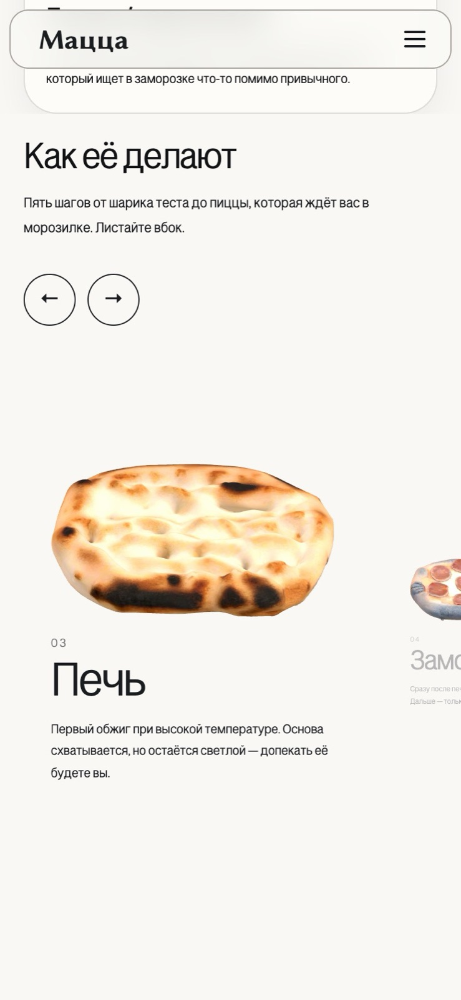

Сайт «Мацца», замороженная римская пицца
Человек стоит у морозильной витрины. В руке пачка с незнакомым названием, вокруг коробки с фотографией пиццы на крышке. Он достаёт телефон и набирает «Мацца».
Второй читатель — закупщик сети. Он открывает тот же сайт за час до встречи или на следующий день после неё и решает, стоит ли продолжать разговор.
«Мацца» — петербургский бренд замороженной римской пиццы. Рецептуру ставит шеф-пиццайоло Илья Галайдо, производство даёт мощности за процент от будущей выручки.


Подробно и честно
Сайт не продаёт. Замороженную пиццу берут сети, а в сеть заходят через закупщика и личный разговор.
Поэтому весь рассказ на сайте я построил вокруг 2 вопросов: что внутри пачки и кто её делает. Подробность отвечает за первый вопрос, честность — за второй.
Продукта в продаже нет, ИП не зарегистрировано, название рабочее. В реквизитах стоят прочерки вместо выдуманного ИНН, и над ними плашка «оформляем документы».
Ассортимент стоит перед презентацией
3D-модели держат айдентику: на полке пачка стоит среди коробок с фотографией продукта. Возиться с моделями мне интереснее всего в этом проекте.
Первую версию я открывал презентацией приготовления: 5 полноэкранных шагов с прилипающей прокруткой. До первой позиции ассортимента покупатель пролистывал 6 экранов.
Я убирал её оттуда трижды. Сначала в липкую колонку рядом с товаром — модели сбоку перетягивали взгляд с карточек. Потом на отдельный этаж после ассортимента. Потом отвязал от прокрутки страницы совсем.
Третье урезание далось тяжелее всего: презентацию я делал сам, и она мне нравилась. Сейчас ассортимент идёт сразу за первым экраном.

Крупный в кадре один
Лента из 5 шагов листается вбок стрелками, свайпом и тачпадом. Прокрутка страницы её не двигает: смотреть презентацию или проехать мимо решает читатель.
В кадр помещается 2—3 шага. Размером модели, кеглем подписи и её прозрачностью правит 1 число — фокус шага от 0 до 1, посчитанный от расстояния до середины кадра.
Вне фокуса модель ужимается до 46%. Заголовок относится к примечанию как 6 к 1. Модель стоит левым краем на оси подписи и низом на её строке.
Замер на 5 точках остановки: фокус 1.00 держит ровно 1 шаг, у остальных 0.00. Заголовки всех 5 шагов начинаются на отметке 647 px.


Возражения говорят словами покупателя
Блок собирает 5 сомнений в тех формулировках, в которых покупатель произносит их про себя: «Замороженная пицца — это же картон», «Наверняка там полно химии», «Я не умею готовить», «Проще заказать доставку», «Займёт всю морозилку».
Ответы я собрал из состава, срока хранения и режима допекания, опубликованных выше на той же странице. Новых обещаний в них нет: отвечать за них пока нечем.
Пары держит расстояние: 10 px внутри пары, 48 px между парами.

Модели весят 1,8 МБ вместо 21
Сжатие уменьшило текстуры с 4096 до 1024 пикселей, meshopt проредил геометрию. В моделях от 4405 до 30 649 вершин. Все 5 работают в общем контексте WebGL: отдельный холст на шаг стоил бы 5 контекстов и 5 циклов отрисовки.
Модели повторяют только лицевую сторону, изнанка непригодна. Оборот пришлось выбросить: конус в 0,46 радиана держит и дрейф на 3 некратных частотах, и отдачу от прокрутки. Ограничение мне тут нравится больше исходной задумки.
При включённом «уменьшении движения» 3 снятых подряд кадра совпадают.

Страницы читаются до загрузки скриптов
Сборка пререндерит 4 страницы в статику. Первый клиентский рендер совпадает с серверным, иначе React отбрасывает пререндер целиком.
Раскладку я перенёс из JS в CSS. Версия на JS-брейкпоинтах оставляла на телефоне десктопный макет: на сервере ширина неизвестна, подставлялась заглушка 1200 px.
Чего на сайте нет
- Продаж. Форма собирает письмо и открывает почтовый клиент, приёмника заявок нет.
- Аналитики и пользователей. Решения не проходили проверку на людях.
- Окончательного названия. «Мацца» рабочее.
- Пережатых моделей товара:
pizza.glb4,95 МБ,margarita.glb1,48 МБ,gorgonzola.glb1,50 МБ. Публикация весит 14 МБ.
Что дальше
- Пережать 3 оставшиеся модели той же цепочкой.
- Поставить приёмник заявок вместо почтового клиента, подключить аналитику.
- Показать сайт закупщику и покупателю, проверить, доходят ли до ассортимента.
- Зарегистрировать ИП, поставить реквизиты.
Ведро
- Сегментация хореки и розницы. План развести сайт на 2 страницы с выбором сегмента на входе. Остановился на 30%, выполненных планов 0.
- Поиск акцента, 9 подходов за один день: лайм, сигнальный циан, чистый жёлтый, берри, чистый красный, яркий розовый, розовый из референса,
#f433ab, пыльная роза,#f785cb. Дольше всего в проекте я искал именно цвет. Остался жёлтый#ffc145. - Ультрамариновая палитра. Код описывает 4 переменные, использований 0.
- Полёт продукта из шапки в карточку ассортимента. 4 захода за 6 августа.
- Цветные фоны 5 стадий. Своя заливка, свечение и цвет текста у каждого шага.
- Полный оборот модели в шапке. Полкруга показывал донышко.
- Анимированная сетка точек на фоне.
- Раскладка на JS-брейкпоинтах.
Титры
- Дизайн, текст, вёрстка, публикация — Алексей Сергеев.
- Рецептура — Илья Галайдо, шеф-пиццайоло.
- Производство — мощности за процент от будущей выручки.
- Код и вёрстка — в паре с Claude Code.
- Начало — 23 марта 2026. Пуска нет: продукт не готов. Сайт я делаю в свободное время, работа продолжается.
- Сайт — lechatsergeev.github.io/rimsk